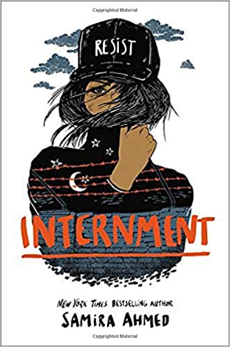

Recommendations
Now, the moment you've all been waiting for, my personal recommendations! These five books vary in genre, so there may be some that you want to check out and some you dislike. I also have some other recommendations from my bookshelf that specialize in different areas, so I can appeal to the widest audience possible. I really hope that you can get the most out of my recommendations!

My Top 5 Favorite Books
5. Internment
At number 5 we have Internment by Samira Ahmed. Internment is about a 17 year old girl named Layla living in a futuristic United States. When the government begins to transport Muslim families to internment camps, Layla and her family are forced to live under constant scrutiny with hundreds of other families. Layla is absolutely furious, and she takes a stand, with newly made friends and modern technology, to fight against oppression.
I classified this book as dystopian fiction. I really love this book because it makes several connections to previous oppressive camps in U.S history, and it paints the vivid picture of how history does, in fact, repeat itself. It has the whole package; societal messages, humor, despair, hope, love. It has everything a modern book needs, especially its eye-opening qualities.
Other Books I Recommend
Here are some other books I sincerely enjoyed reading. They didn't make my Top 5, but I felt that they should still be included.